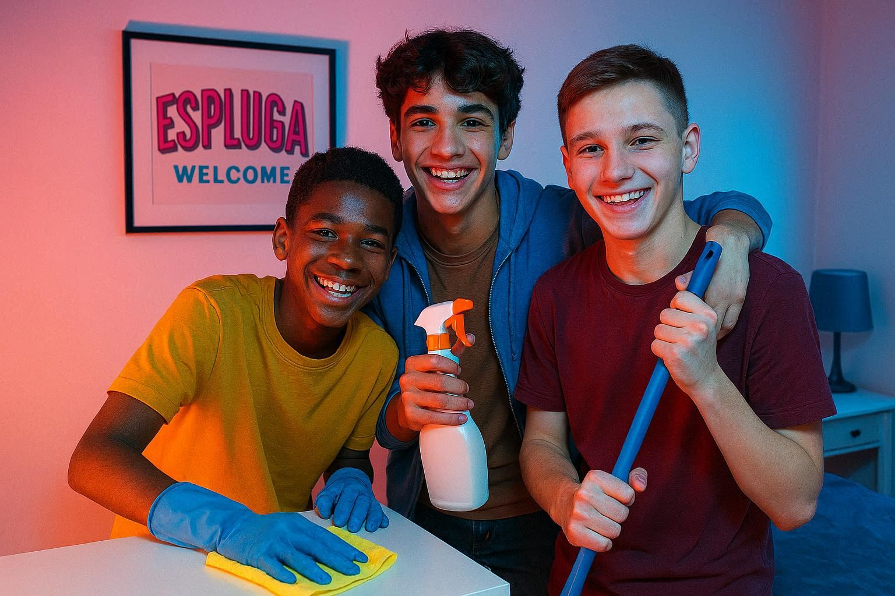

Découvrez comment nous accompagnons chaque jeune dans le devellopement de son autonomie !
Le lien avec les éducateurs et leurs paires
Les enjeux, les impératifs, l'interêt de s'assurer au quotidien qu'ils apprennent à devenir responsable
Qui est le Référent de chaque jeune !!
📅 L'organisation sur le terrain : comment s'implique toute l'équipe !